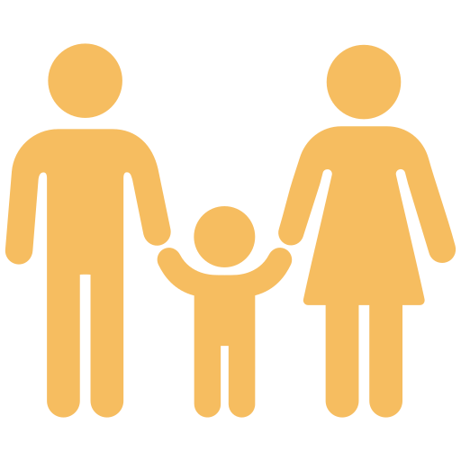
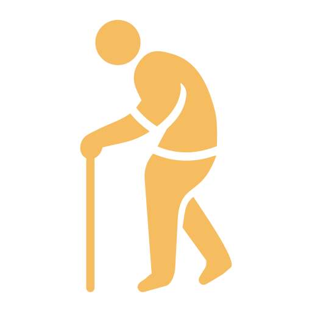
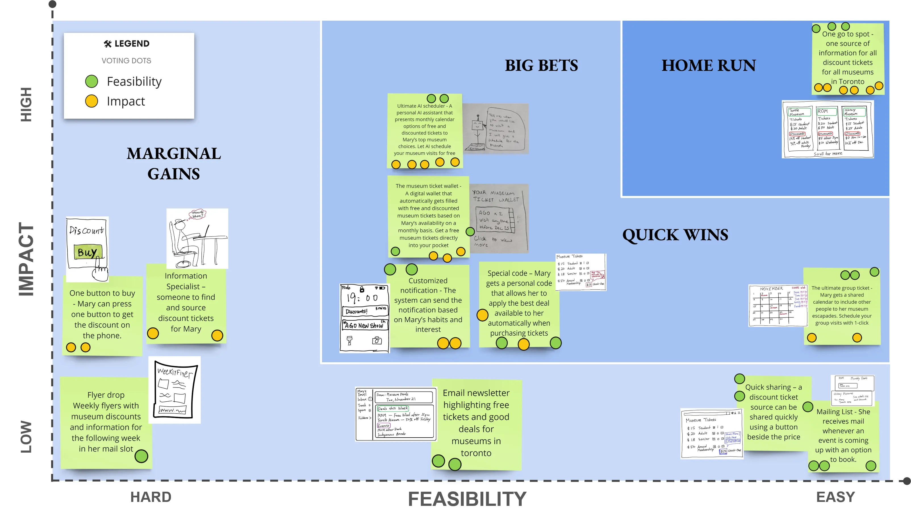
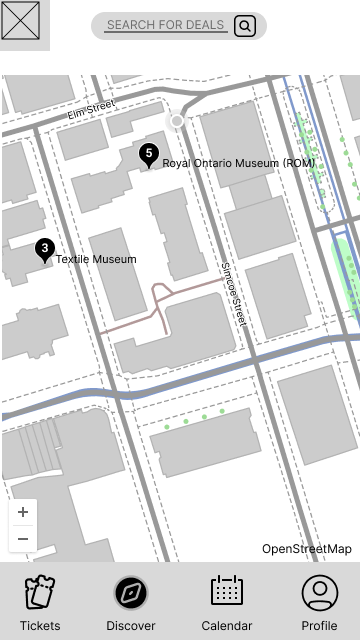
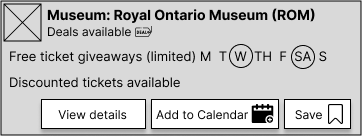
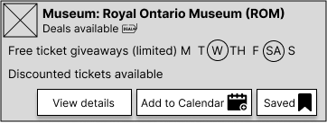

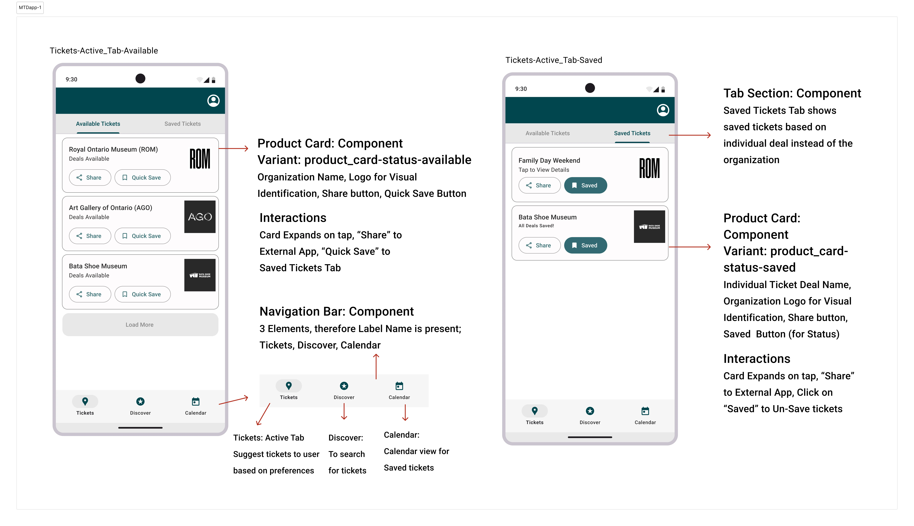
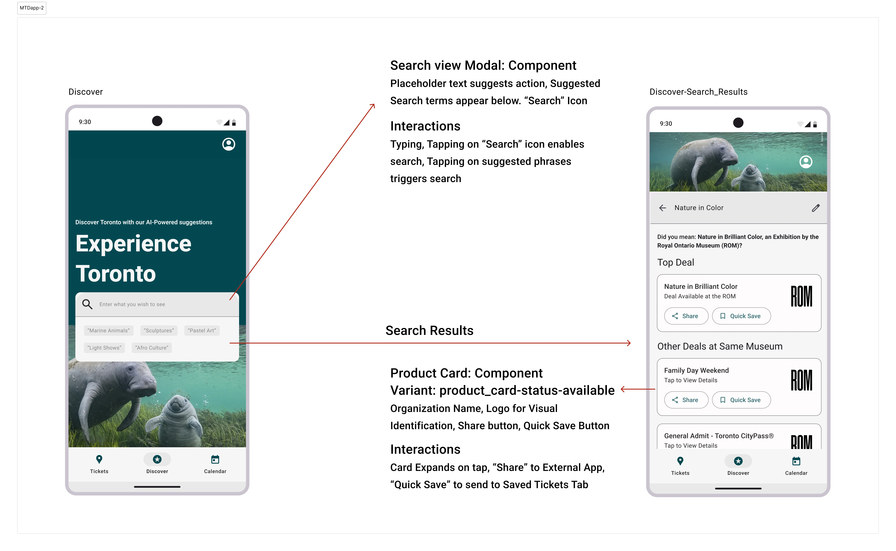

Project Context
Defining the Problem
Toronto museums offer free or discounted admission to students, families, and other groups, yet many eligible visitors miss out. Deal information is scattered across multiple sites, often outdated, hard to verify, and inconsistent. Therefore, Our goal was to to reduce fragmentation and make discounts discoverable and actionable in a single mobile-first platform.
UX Research Goals
1. Understand user awareness and behaviour around museum ticket discounts
2. Identify friction points and drop-off reasons for potential visitors
3. Explore trust indicators in cultural event digital experiences
4. Highlight accessibility and inclusivity gaps
UX Research
We conducted qualitative interviews and contextual inquiries to understand user behavior and challenges. Our target audiences were:
Students
Newcomers

Families

Seniors
We also examined museum websites & ticketing flows (competitive audit) and analysed deal discovery behaviours.
Our UXR Insights
Low Awareness of Deals
Discounts exist but are poorly publicised; many audiences simply don’t know.
Perceived Effort > Benefit
Participants abandon searches if offers aren’t easy to spot or verify.
Inconsistent Digital Flows
Different museums have entirely different booking and discount layouts.
Fragmented Information
No single source aggregates deal data or event calendars.
We synthesized the research into a persona: Mary, the Museum-Goer.
Persona Creation

Mary, the Museum Go-er
Busy student 🏫 On a budget 💲
Loves exploring culture ❤️, lives in the moment 😌
"I would visit more museums if
I had free or discounted tickets"
Meet Mary,
the Museum Go-er!
Mary was a fictitious human birthed by the group's research data. A hard-working and busy student, when time allows, she opts to visit museums with her friends or even solo!
Mary’s attempt to visit a museum in the modern day and age mirrors the challenges faced by many Torontonians. Despite prolonged efforts to find discounted tickets, the benefits are overshadowed by the time spent searching.
The delay results in exceeding her budget, highlighting the difficulties in navigating the process of obtaining affordable tickets for museum visits.
Mary’s needs shaped our App's features.
Ideation & Feature Prioritization
Mary’s needs shaped our Impact vs. Feasibility matrix for feature prioritization.

Design Touchpoints & Decisions
Users want ease of access
Built a Centralized Tickets Feed combining all discounts
Users value speed
Added Save & Share CTA for quick action
Users plan by date
Integrated Calendar-based visual planner
Trust grows with clarity
Grouped offers visually, used recognisable icons
Users need relevant content
Proposed AI-enhanced recommendations based on history
What I Designed
We prototyped a mobile UI designed to make complexity invisible through:
Centralized Feed
All available free or discounted tickets in one screen
Save & Share
Enable bookmarking & sharing of offers instantly
AI-powered Recommendations
Personalised suggestions based on previous behaviour
Visual Planner
Calendar view for date-based planning
Design Evolution
Designs were iterated based on internal review and presented to senior UX researchers. Feedback validated our approach and reinforced the value of visual clarity, trust, and actionable ticket information.





Final UI Design:




What I Learned
The goal of this project was to create a clean, functional UI that simplifies how Torontonians discover and access museum ticket deals.
Designing around real-world fragmentation (many museums, different systems) required a UI that could bring coherence without overwhelming the user. Through visual hierarchy, smart filtering, and minimal navigation, we created a prototype that felt both local and user-friendly. This project also sharpened my feature prioritization skills using an impact-feasibility matrix, and reinforced the value of designing for trust.
Also, I envisioned it as an AI-powered interface: its recommendations and event highlights would adapt based on user preferences and behaviour data, improving relevance over time.
Key Takeaway: Make messy systems feel simple
When back-end data is scattered or inconsistent, design clarity is non-negotiable. A well-structured interface can build trust by masking complexity, guiding users straight to what they value.